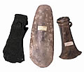

|
|
News
Enlightenment

Discovering the world in the eighteenth century The Birth of Archeology Online Tour How the study of ancient Britain led to the creation of British archaeology - a tour to accompany the Museum's exciting new Enlightenment gallery. Axes from the Stone, Bronze and Iron Ages
|
The British Museum has played a major role in archaeological survey and excavation since the 19th century. It still leads excavations both within Britain and overseas. Over time, information about ongoing excavations will be made available on The British Museum web pages. This web page is really intended to provide people with general information about archaeology. The Museum hosts a variety of events relevant to archaeology, and a special emphasis is being placed on the provision of resources for A-level Archaeology. A Checklist of 'Things to Do' for those wanting to learn more about Archaeology:
|
Wooden coffin with the remains of a skeleton,
from Tarkhan, Egypt 1st Dynasty, around 3000 BC |
|||
|
home |
visit |
what's on |
join |
shop |
learning |
COMPASS |
world cultures |
sitemap |
contact us |
copyright
© The British Museum, 2002 |
|||||